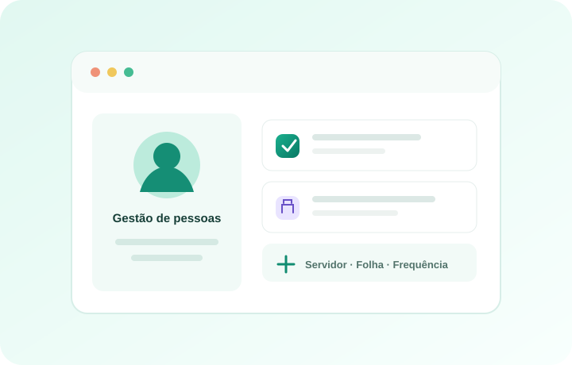

Servidores e vida funcional
Cadastros, vínculos, histórico funcional, cargos, lotações e consulta detalhada do servidor.
Organize a vida funcional dos servidores e conecte as rotinas de pessoal do órgão em um só sistema.

O Global RH reúne módulos administrativos e serviços para servidores municipais.
Cadastros, vínculos, histórico funcional, cargos, lotações e consulta detalhada do servidor.
Processamento por competência, consulta e emissão de holerites e geração de remessas bancárias.
Consignados, gratificações, adiantamentos, diárias, auxílios, descontos, horas extras e compensação de INSS.
Controle de períodos e acompanhamento das rotinas de afastamento dos servidores.
Rotinas de ponto administrativo e área segregada para registro remoto, histórico, perfil e consulta de holerite.
Progressões funcionais, cargos, concursos, aposentadoria e processos disciplinares.
Portal público de transparência, relatórios administrativos, notificações e consulta de documentos.
Fluxos de assinatura eletrônica e módulos de integração com serviços como eSocial e TCM-BA.
Acesso protegido por usuário e perfil, configurações do órgão e cadastros auxiliares.
Converse com a equipe sobre as rotinas do seu órgão.